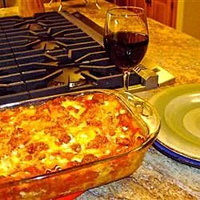

Brenda's Lasagna
Home

Description
This is Brenda's faster, and less expensive lasagna.
Lasagna (plural “lasagne”) is a flat and expanded pasta sheet, traditionally made in Italy with Parmigiano-Reggiano (Parmesan cheese), Béchamel sauce (white sauce), and ragù (a meat-based sauce). ... The dish is made by stacking lasagna sheets on top of each other with meats, vegetables, cheeses, and tomato sauce between
Ingredients
- 1 (16 ounce) package lasagna noodles
- 1 pound lean ground beef
- salt and pepper to taste
- 1 (16 ounce) jar spaghetti sauce
- 1 clove garlic, minced
- 1/2 pound shredded mozzarella cheese
- 1/2 pound shredded Cheddar cheese
- 1 pint ricotta cheese
Steps
- Bring a large pot of lightly salted water to a boil. Add pasta and cook for 8 to 10 minutes or until al dente; drain.
- Preheat oven to 350 degrees F (175 degrees C). In a large skillet over medium-high heat, brown beef and season with salt and pepper; drain. Stir in spaghetti sauce and garlic and simmer 5 minutes.
- In a medium bowl, combine mozzarella, Cheddar and ricotta; stir well. In 9x13 inch pan, alternate layers of noodles, meat mixture and cheese mixture until pan is filled.
- Bake in preheated oven for 30 minutes, or until cheese is melted and bubbly.